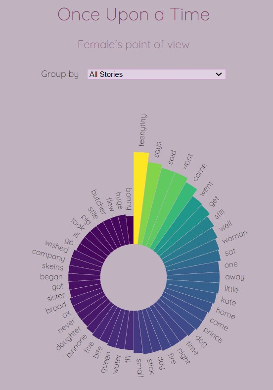

I would like to achieve with the visualization a clear picture of the most common words in fairy tales in which the main character is a woman. I would like with the help of visualization that people will have an easy and convenient access to a quick understanding of this focused issue. Most of us remember the female figure in fairy tails as weaker, more needy and not dominant. So I wanted to create this visualization to see if this thing really exists or if we remember such specific fairy tales. In recent years, the trend of the strong woman in fairy tales is gaining momentum, and with the help of visualization, I would like to see what the situation was like in fairy tales on which generations of children grow up.
I would like the visualization to be a believable mirror for stories and clearly see the common words without a doubt.
Bar chart- we sew that people can be more accurate when the data is shown in a bar chart and here it's very important in this visualization
Color factor- to pop up the most common words and focus the readers eyes
Tooltip hover- to make a minimal and easy to understand visualization a hover will be a great tool to add more information but not too much at first sight.
I chose a minimal design, using colors and a rounded bar graph to emphasize the most common words. I chose that the initial display is of all the words from all the stories in which the main character is a woman. The choice of a colorful design is to attract the reader's attention, the choice of a rounded bar graph is also to give more interest to the reader who will focus a few more seconds on the graph and process more information. Usually we are used to seeing a regular bar graph and anything unique causes extra attention. In addition, the use of Tooltip is to minimize the specific information on the page and give the information in question only if there is interest in the specific word. I believe that this design supports the aspirations of visualization and contributes to every task that visualization hopes to fulfill
